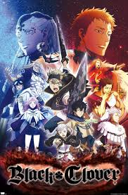
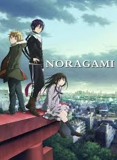
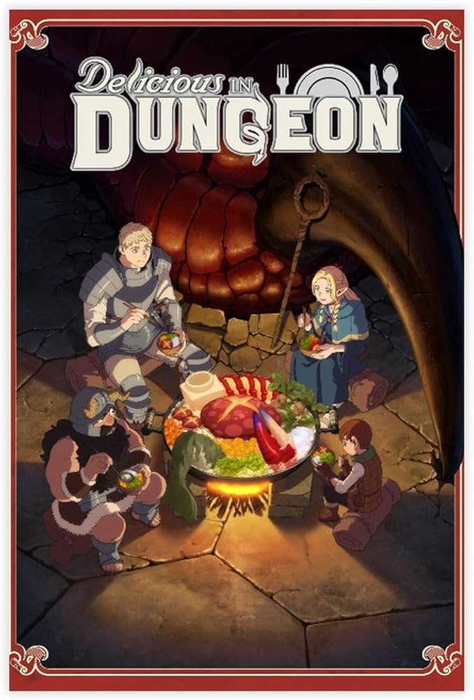

Fantasy Anime
Fantasy anime transports viewers into imaginative worlds filled with magic, mythical creatures, powerful kingdoms, and unforgettable adventures. These stories follow determined heroes, unlikely friendships, and epic journeys that test courage and identity.
Jump to the lineupFantasy Anime Lineup
| Anime | Genres | Where to Watch | About the Story | Trailer |
|---|---|---|---|---|
|
 Black Clover |
Action, Fantasy |
Crunchyroll Hulu |
Asta is born without magic in a world where magic determines power and status.
Refusing to give up, he trains relentlessly to become the Wizard King.
Alongside his gifted rival Yuno and the Magic Knights, Asta faces rival kingdoms,
dangerous enemies, and dark forces threatening the Clover Kingdom.
Main characters: Asta, Yuno, Noelle Silva If you like: Harry Potter or The Witcher, you’ll love this underdog magic adventure. |
|
 Ascendance of a Bookworm
Ascendance of a Bookworm
|
Fantasy, Slice of Life | Crunchyroll |
A book-loving college student is reborn into a medieval world where books are rare
and reserved for the elite. Now living as Myne, she’s physically weak but mentally determined.
Using modern knowledge, she tries to create books from scratch while navigating class systems,
magic, and survival.
Main characters: Myne, Lutz, Ferdinand If you like: Bridgerton or Little Women, you’ll enjoy this cozy, thoughtful fantasy. |
|
|
 Noragami |
Action, Fantasy | Crunchyroll |
Yato is a broke minor god who takes odd jobs for five yen, hoping to become famous.
After meeting Hiyori, a human girl tied to the spirit world, he gains a weapon partner, Yukine.
Together they fight spirits, rival gods, and the consequences of Yato’s hidden past.
Main characters: Yato, Hiyori Iki, Yukine If you like: Supernatural or Lucifer, you’ll love this urban fantasy. |
|
|
 Delicious in Dungeon |
Fantasy, Comedy | Netflix |
After a raid goes wrong, Laios and his party have no money and no time to waste.
To rescue their friend, they dive deeper into the dungeon—surviving by cooking and eating monsters.
With Senshi guiding the “monster cuisine,” the series blends adventure, comedy, and clever worldbuilding.
Main characters: Laios, Marcille, Senshi If you like: Dungeons & Dragons or The Great British Bake Off, you’ll enjoy this quirky adventure. |